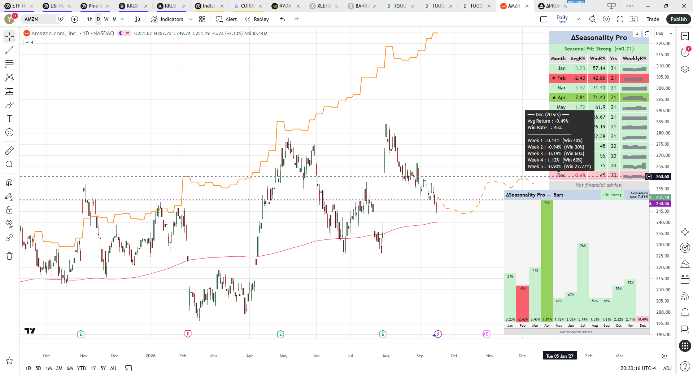
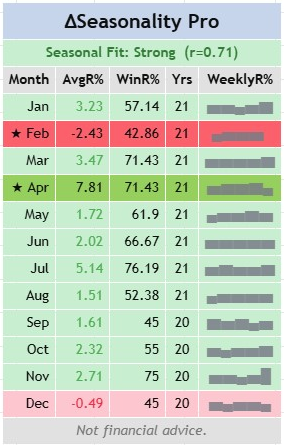
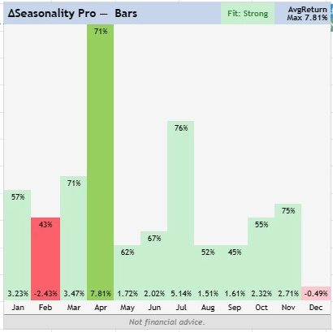
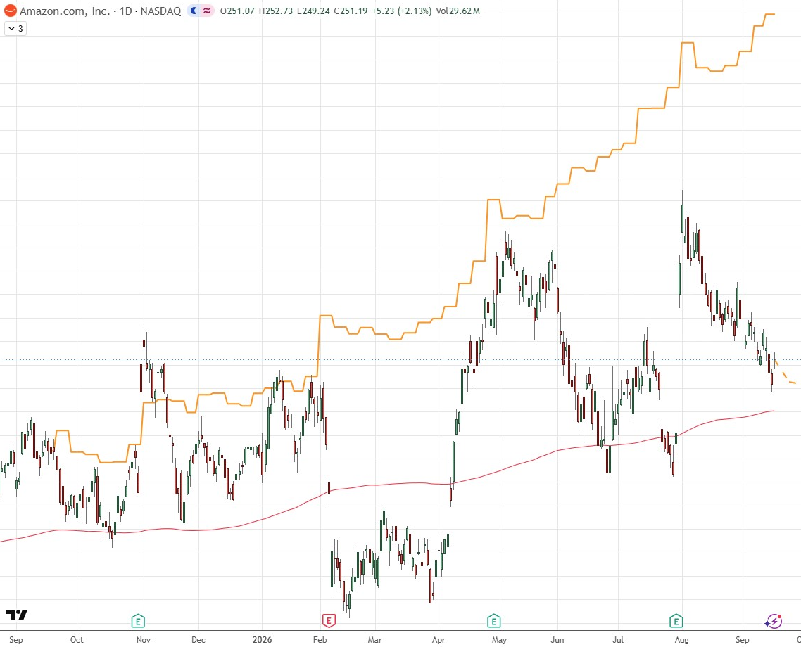
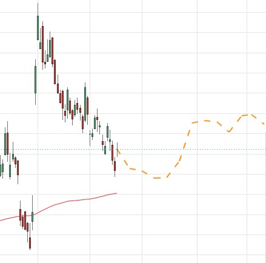
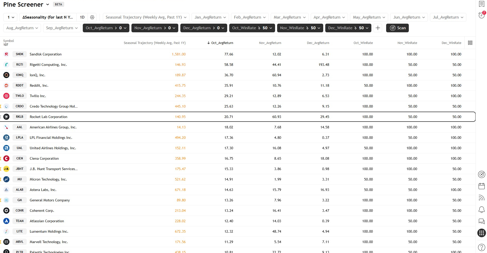

ΔSeasonality ProMonthly & weekly seasonality analytics for any symbol, right on your chart
ΔSeasonality Pro replays a symbol's price history to show you how it has typically behaved in each calendar month — average return, win rate, and a week-by-week breakdown — then scores how closely the last 12 months actually followed that historical pattern. A forward projection and a past-year trajectory overlay let you see the seasonal pattern directly on the price chart, not just in a table.
What is ΔSeasonality Pro?
ΔSeasonality Pro is a TradingView indicator that turns a symbol's own price history into a calendar of seasonal tendencies — no external data, no manual backtesting.
Add it to any daily chart and it walks back through up to 20 years of bars, calculating the average return and win rate for every calendar month (Jan–Dec), plus a week-by-week breakdown within each month. The results are drawn directly on the chart as a summary table, an optional bar-chart histogram, a past-year "seasonal trajectory" overlay, and a forward price projection for the next 1–12 weeks — all built from the same underlying seasonal averages.
On top of the raw averages, ΔSeasonality Pro computes a Seasonal Fit score: a correlation between the symbol's actual returns over the last 12 months and what its historical seasonal pattern predicted for those same months. This tells you, at a glance, whether the symbol is currently "in season" or trading against its usual rhythm.
Seasonality is a historical tendency, not a forecast guarantee. Past seasonal patterns can weaken, reverse, or fail to repeat. Every table, bar chart, and projection in this indicator carries a "Not financial advice" disclaimer for this reason — treat it as one input among many, not a signal to trade on alone.
Core Concept — Seasonality & Seasonal Fit
Everything the indicator shows comes from two calculations: a monthly/weekly seasonal average, and a Seasonal Fit correlation.
How the seasonal average is built
On every month boundary, the indicator records the return from the previous month's close to the current month's close, and files it under that calendar month (Jan–Dec) and — separately — under the trading week within that month (weeks 1–5, based on a trading-week counter rather than fixed calendar-day buckets). Only months within the Lookback period in Years window are counted. Averaging these across every year in the lookback window produces each month's Avg Return % and Win Rate % (the percentage of years that month closed positive).
How Seasonal Fit is scored
Seasonal Fit answers a different question: is the symbol behaving seasonally right now? It compares the actual monthly return for each of the last 12 months against a historical baseline for that same calendar month — built only from years older than those last 12 months, so the score is never compared against itself. The result is a Pearson correlation coefficient (r) between −1 and +1.
| Range | Label | Meaning |
|---|---|---|
| r ≥ 0.30 | Strong | Recent moves closely tracked the historical seasonal rhythm for those months. |
| −0.30 < r < 0.30 | Weak | Little relationship — recent price action looks largely unrelated to the seasonal pattern. |
| r ≤ −0.30 | Anti-Seasonal | Price moved opposite to the seasonal pattern — something else is likely overriding it right now. |
A minimum of 6 of the last 12 months must have a usable historical baseline before Seasonal Fit will show a score; until then it reads N/A.
Dashboard / Feature Tour
ΔSeasonality Pro draws up to four elements on your chart: the seasonality table, an optional bar-chart histogram, a past-year trajectory line, and a forward projection. Each is independently toggleable.
Overview
Here's all four elements together on a daily AMZN chart — the table (top right), the bar-chart panel (bottom right), and the orange trajectory/projection line running through the candles.

1 · Seasonality Table
A grid panel (default: top-right corner) with one row per calendar month, plus a header banner. The header shows the Seasonal Fit score. Each month row is colored pale green or pale red by average return sign, with the single best month highlighted in stronger green and the single worst month in stronger red, both marked with a ★. Hover any month row for a tooltip breaking that month down week by week. An optional 5th column renders a tiny sparkline (one Unicode block character per week) showing the shape of returns within the month at a glance.

2 · Bar Chart
An optional StockCharts-style histogram (default: bottom-right corner) with one column per month. Bar height is driven by whichever metric you pick under Bar Height Metric — Avg Return % normalizes height against the largest-magnitude monthly average across all 12 months, or Win Rate % fills 0–100% of the bar height. Whichever metric isn't driving height is still shown as a label — the win rate at the top of the filled portion, the average return at the bottom. Best and worst months get the same stronger green/red treatment as the table, and the header row repeats the Seasonal Fit badge alongside a scale label explaining what a full-height bar represents.

3 · Seasonal Trajectory (Past 1Y)
A line plotted directly on the price chart, anchored to the closing price roughly 12 months ago and then walked forward week by week using each week's historical average return for that calendar month/week slot. It's shifted vertically by Vertical Plot Shift in % so it doesn't sit directly on top of price, making it easy to compare the seasonal "expected" path (orange) against what price (candles) actually did over the same 12 months.

4 · Forward Weekly Projection
Dashed orange line segments extending up to 12 weeks into the future from the last close, compounding each week's historical average return for that future calendar month/week. Because future weeks have no trading-week bar history yet, the week-of-month bucket for projection is estimated from the calendar day instead of the trading-week counter the table uses — see §06 Limitations for what that means in practice.

5 · Using It in the Pine Screener
Every monthly Avg Return % and Win Rate % value is also published as a hidden screener-safe plot, so you can filter and rank an entire watchlist by seasonality without opening each chart. In TradingView's Pine Screener, add the indicator, then add columns for the month(s) you care about — e.g. Oct_AvgReturn, Nov_WinRate, Dec_WinRate — and set filters like > 0 or > 50 to surface symbols with strong seasonal tendencies heading into that stretch of the calendar. The screener also exposes the Seasonal Trajectory (Weekly Avg, Past 1Y) column so you can sort by how closely a symbol has been tracking its seasonal path recently.

Remember the caveat from §06 Limitations: the Screener only sees roughly the last 2 years of daily bars per symbol, so these columns reflect a shorter window than your chart's Lookback period in Years setting, and Seasonal Fit is intentionally left out of the screener-safe plots for the same reason.
The seasonality table, bar chart, trajectory, and projection all depend on daily-bar logic. On any non-daily timeframe, ΔSeasonality Pro instead shows a small warning panel reading "Seasonal indicator works only on DAILY chart" and skips the rest of its output.
Settings Reference
Settings are grouped exactly as they appear in the indicator's own settings panel on TradingView.
Worked Examples
One chart, read start to finish — everything you need is on this single AMZN dashboard.
Start with the header: Seasonal Fit: Strong (r=0.71). That's above the +0.30 threshold, so AMZN's actual monthly returns over the last 12 months have generally moved in the direction its historical seasonal pattern predicted — the seasonal edge has been showing up recently, not just in distant history, which gives more weight to everything below it.
Scan the month rows for the stars. ★ Apr shows AvgR% 7.81, WinR% 71.43, Yrs 21 in strong green — the single best-performing month across 21 years of history, closing higher in roughly 5 of every 7 Aprils by an average of +7.81%. ★ Feb is the mirror image: AvgR% −2.43, WinR% 42.86, in red — the single worst month, closing lower more often than not. Every other month sits in between, colored pale green or pale red by sign alone.
Hover any row (or the matching column in the bar chart) for the week-by-week tooltip — a strong month can still hide one weak week inside it, which the WeeklyR% sparkline hints at before you even open the tooltip.
Put together: with Fit already reading Strong, AMZN entering April carries more seasonal conviction than the raw +7.81% average alone would suggest — and the same logic means a Weak or Anti-Seasonal Fit score would call for the opposite adjustment, discounting even a historically strong month.
Limitations & Known Behavior
A few behaviors are by design, not bugs — worth knowing before you rely on the numbers.
TradingView's Pine Screener only evaluates roughly the last 500 bars per symbol (~2 years of daily data), no matter what Lookback period in Years is set to. The screener-safe monthly Avg Return / Win Rate columns will reflect that shorter window, not your full lookback setting.
Seasonal Fit is intentionally left out of the Screener-safe plots. Once 12 months are set aside for the comparison window, a ~2-year Screener history leaves the "historical average" for a given month as a single prior year's value rather than a genuine multi-year average — the correlation wouldn't be meaningfully different from noise in that context. Seasonal Fit remains fully functional on the live chart and bar chart, where your full lookback history is used.
Past weekly averages are bucketed using a trading-week counter (weeks actually observed on the chart). Future projection weeks have no bar history yet, so they're bucketed by calendar day-of-month instead. The two methods usually agree but can diverge on some weeks — this is a documented approximation, not a data error.
The table, bar chart, trajectory, and projection all require daily bars. On any other timeframe you'll see a warning panel instead of the dashboard.
FAQ & Troubleshooting
Why does my chart just show a red warning box instead of the table?
You're on a non-daily timeframe. Switch to a daily chart — see §06.
Why do the table and bar chart overlap each other?
Table Position and Bar Chart Position are set to the same corner. Pine doesn't auto-offset overlapping panels, so one will sit on top of the other. The title banner of each panel shows a ⚠ warning when this happens — move one of them to a different corner in settings.
Why does Seasonal Fit say "N/A"?
Seasonal Fit needs at least 6 of the last 12 calendar months to have a usable historical baseline (built from years older than those 12 months). On a newly-listed symbol or a short lookback setting, that threshold may not be met yet.
A symbol passed my Pine Screener filter (e.g. Oct_AvgReturn > 0), but the chart shows a negative Oct AvgR%. Why?
This is the Screener's ~2-year history limit from §06 in practice. The screener column and the chart table are both genuinely correct — they're just computed from different amounts of history. The Screener only evaluates roughly the last 500 bars per symbol, so its Oct_AvgReturn might reflect just 1–2 recent Octobers. The chart table uses your full Lookback period in Years setting (up to 20), so a positive recent October can sit inside a longer run of negative ones, flipping the sign once more years are included. Treat Screener results as a first-pass filter to shortlist symbols, then confirm on the actual chart with your intended lookback before acting on them.
What does the ★ next to a month mean?
It marks the single best-performing month (highest average return) or single worst-performing month (lowest average return) across your lookback window — shown in stronger green or stronger red in both the table and the bar chart.
Why don't my past trajectory and forward projection line up perfectly at the "today" point?
They're built from slightly different week-bucketing methods — see §06 for why.
For personal use only. Do not redistribute, resell, or publicly repost this document.